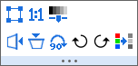

Objektverwaltung
Object-Manager
Übersicht Objektverwaltung
Die Objektverwaltung ist ein andockbares Bedienfeld, das standardmäßig auf der rechten Seite des Arbeitsbereichs geöffnet wird. Die Objektverwaltung hilft Ihnen beim schnellen Bearbeiten des aktuellen aktiven Fensters.
- Wählen Sie Ansicht: Objektverwaltung im Hauptmenü.
- Klicken Sie mit der rechten Maustaste auf die Titelleiste der Objektverwaltung, um das Fenster automatisch frei zu bewegen, anzudocken, zu verbergen oder automatisch im Vordergrund zu verbergen.
- Klicken Sie mit der rechten Maustaste auf den weißen Bereich in der Objektverwaltung, um die Option Minisymbolleisten auszuwählen.
Datenzeichnungen oder Diagrammobjekte im aktiven Diagrammfenster verwalten
Datenzeichnungen verwalten
Es handelt sich um ein Fenster mit einem Bedienfeld, das in einer Baumstruktur zeigt, welche Elemente sich im Diagrammfenster befinden -- Layer, ggf. Gruppen, Zeichnungen und ggf. spezielle Punkte.
- (a). Jedes Zeichnungselement besteht aus einem Symbol (das Miniaturbild einer Farbskala bei Kontur oder Oberfläche mit Farbabbildung) und dem darauf folgenden Zeichnungsnamen.
- (b). Der Zeichnungsname ist programmatisch mit den Quelldaten verknüpft, wie z.B. die Diagrammlegende.
Diagrammobjekte verwalten
Es handelt sich um ein Fenster mit einem Bedienfeld, das in einer Baumstruktur zeigt, welche Elemente sich im Diagrammfenster befinden -- Layer, Diagrammobjekte (Achsentitel, Legende, Text- oder Zeichenobjekte).
Blätter in der aktiven Arbeitsmappe und dem aktiven Matrixfenster verwalten
Es handelt sich um ein Fenster mit einem Bedienfeld, das in einer Baumstruktur zeigt, welche Elemente sich im Arbeitsmappen-/Matrixfenster befinden -- Mappen und Blätter. Der Kurzname der Arbeitsmappe und der Name und die Beschriftung des Blatts werden aufgelistet.
Wechselwirkung zwischen Objektverwaltung und Diagrammfenster
In den Ansichtsmodus wechseln
Ansichtsmodi: Zeichnungen oder Diagrammobjekte zeigen
- Zeichnungen zeigen: Die Zeichnungen in der aktuellen Grafik werden gezeigt. In der oberen rechten Ecke gibt es eine kleine Schaltfläche
 Zeichnungen zeigen, um den Status der Ansichtsmodi anzuzeigen. (Standard)
Zeichnungen zeigen, um den Status der Ansichtsmodi anzuzeigen. (Standard)
- Diagrammobjekte zeigen: Die Diagrammobjekte werden gezeigt, einschließlich Zeichenobjekte, Textobjekt, Legenden, Farbskala und Achsentitel und so weiter. In der oberen rechten Ecke gibt es eine kleine Schaltfläche
 Diagrammobjekt zeigen, um den Status der Ansichtsmodi anzuzeigen.
Diagrammobjekt zeigen, um den Status der Ansichtsmodi anzuzeigen.
- Klicken Sie mit rechten Maustaste auf den leeren Bereich oder auf den Grafikknoten in der Objektverwaltung, um Diagrammobjekte zeigen oder Zeichnungen zeigen auszuwählen und damit den Ansichtsmodus zu wechseln.
- Klicken Sie auf die kleine Schaltfläche oder in der oberen kleinen Ecke, um den Ansichtsmodus zu wechseln.
- Drücken Sie die Tastenkombination Strg+Shift+S, um den Status zu wechseln.
Ansichtsmodi nach Reihenfolge
Klicken Sie mit der rechten Maustaste auf den leeren Bereich unter den Zeichnungen oder klicken Sie mit der rechten Maustaste auf den Grafikknoten. Sie können In Reihenfolge des Auftretens anzeigen oder In Zeichenreihenfolge anzeigen wählen, um den Ansichtsmodus der Zeichnungen in der aktuellen Grafik zu ändern:
- In Reihenfolge des Auftretens anzeigen: Die Zeichnungen werden in der Reihenfolge ihres Auftretens in der Grafik angezeigt.
- In Zeichenreihenfolge anzeigen: Die Zeichnungen werden in der Reihenfolge ihres Zeichnens angezeigt.
Operationen für die Zeichnungen
Klicken Sie mit der rechten Maustaste auf eine Zeichnung in der Objektverwaltung. Sie sehen einige spezifische Operationen im Kontextmenü.
Wenn Sie die Minisymbolleisten aktiviert haben, klicken Sie auf eine Zeichnung. Die zugehörige Minisymbolleiste wird als Popup angezeigt. Das Auswählen eines Liniendiagramms innerhalb einer Gruppe wird zum Beispiel die unten gezeigte Minisymbolleiste aufrufen:
Diagrammelement auswählen
Wählen Sie ein Element (Layer, Zeichnungsgruppe, Datenzeichnung oder spezieller Punkt) in der Objektverwaltung, um das entsprechende Element im Diagrammfenster auszuwählen und umgekehrt. Hinweis: Wenn eine Zeichnung Teil einer Zeichnungsgruppe ist, wird durch einmaliges Klicken aus die Zeichnung die Gruppe ausgewählt; durch zweimaliges Klicken wird die einzelne Zeichnung ausgewählt.
In einem Diagrammlayer mit Punkt-, Linien- oder Punkt-Liniendiagrammen werden durch Auswählen einer einzelnen Zeichnung in der Objektverwaltung, wie unten gezeigt, die anderen Zeichnungen im Layer abgeblendet. Umgekehrt, wenn Sie eine einzelne Zeichnung im Diagrammfenster auswählen, werden andere Zeichnungen im Layer abgeblendet (siehe den Hinweis unten zu @PSFF).
-
- In der Objektverwaltung können Sie die Auswahl mit Hilfe der Pfeiltasten nach oben und unten verschieben; im Diagramm verschieben Sie die Zeichnungsauswahl mit den Pfeiltasten nach links und rechts.
- Sie können Fehlerbalken nicht separat auswählen. Wenn Sie eine Zeichnung auswählen, die Fehlerbalken hat, folgt die Abblendung der Fehlerbalken der Hauptzeichnung.
- Sollte es mehrere Layer geben, prüft Origin, ob die Layer sich überschneiden. Wenn Sie eine Zeichnung auswählen, blendet Origin alle anderen Zeichnungen aus, einschließlich Zeichnungen in den sich überschneidenden Layern. Zeichnungen in sich nicht überschneidenden Layern werden nicht abgeblendet.
- Wenn Sie eine Zeichnung auswählen, wird diese Zeichnung auch die aktive Zeichnung.
- Sie dürfen gleichzeitig nur eine Zeichnung auswählen, auch wenn Sie die Tastenkombination "Strg + Klick" und "Shift + Pfeiltaste" wie in der Objektverwaltung eines Arbeitsmappenfenster verwenden.
- Wenn Sie eine Gruppe in der Objektverwaltung auswählen (in der Objektverwaltung als gN bezeichnet), werden alle Zeichnungen innerhalb der Gruppe markiert, indem eine Auswahl der fett angezeigt wird. Sie können die Systemvariablen @DTB verwenden, um die Anzahl der markierten Datenpunkte von jeder Zeichnung festzulegen.
Hinweis: Sie können die Systemvariable @PSFF verwenden, um die Grad (in %) der Ausblendung der nicht ausgewählten Zeichnungen festzulegen. Der Standardwert ist 25. Durch das Festlegen auf einen negativen Wert wird der Auswahlmodus der Abblendung deaktiviert und das alte Auswahlverhalten wieder aktiviert (eine Auswahl der Datenpunkte wird fett angezeigt), wie unten zu sehen:
|
Zeichnungen verbergen/zeigen
- Verbergen/zeigen Sie ein Element (Layer, Gruppe, Zeichnung, Spezieller Punkt und Diagrammobjekte), indem Sie das Kontrollkästchen vor dem Element aktivieren/deaktivieren.
-
- Verbergen/zeigen Sie eine Reihe von Zeichnungen mit dem gleichen Namen, indem Sie mit der rechten Maustaste auf eine der Zeichnungen klicken und die Option Zeichnungen mit gleichem Namen zeigen/verbergen auswählen.
- Zeigen Sie nur eine Reihe der Zeichnungen mit dem speziellen Namen und verbergen Sie alle anderen, indem Sie mit der rechten Maustaste auf eine der Zeichnungen klicken und die Option Nur Zeichnungen mit gleichem Namen zeigen auswählen.
-
- Zeigen Sie alle Zeichnungen in der Grafik, indem Sie mit der rechten Maustaste auf eine der Zeichnungen klicken und Alle Zeichnungen zeigen auswählen.
- Verbergen Sie alle Zeichnungen in der Grafik, indem Sie mit der rechten Maustaste auf eine der Zeichnungen klicken und Alle Zeichnungen verbergen auswählen.
 | Bei der Arbeit mit importierten Shapefiles (.shp) können Sie Funktionen von Shapefiles (Punkte, Polylinien, Polygone) im Diagrammfenster und in der Objektverwaltung zur Verfügung stellen machen, indem Sie mit der rechten eine Komponente klicken und ein Häkchen neben Auswählbar platzieren. Um zu verhindern, dass eine Komponente ausgewählt wird, entfernen Sie das Häkchen.
|
Matrixobjekt / Z-Titel der virtuellen Matrix umbenennen
Der Langname des Matrixobjekts / Z-Titel der virtuellen Matrix kann mit der Objektverwaltung für das Diagramm benutzerdefiniert angepasst werden.
Erstellen Sie ein Kontur-/3D-Diagramm mit Matrix oder virtueller Matrix. Klicken Sie bei aktivem Diagrammfenster mit der rechten Maustaste auf die Zeichnung in der Objektverwaltung und wählen Sie im Kontextmenü Umbenennen. Sie können dann den Langnamen für das Matrixobjekt oder die virtuelle Matrix eingeben.
Hinweis: Benennen Sie hier den Langnamen des Matrixobjekts oder der virtuellen Matrix um, nicht aber den Langnamen des Diagramms.
Um das Matrixobjekt umzubenennen, können Sie auch den Dialog Matrixeigenschaften verwenden.
Um die virtuelle Matrix umzubenennen, können Sie auch den Dialog Virtueller Matrixmanager verwenden.
Zeichnungen innerhalb der Gruppe verschieben
Die Zeichenreihenfolge des Layers wird durch die Reihenfolge der Zeichnungen in der Liste Layerinhalt - Diagrammeinstellungen - Objektverwaltung festgelegt. Die Zeichnungen werden gemäß der Listenreihenfolge gezeichnet, d. h., die erste Zeichnung oben in der Liste wird zuerst gezeichnet und die Zeichnung ganz unten als Letztes. Die Zeichenreihenfolge hat also Auswirkungen auch sich überschneidende Zeichnungen sowie auf die Zuweisung der Zeichnungsstile der Inkrementliste in gruppierten Zeichnungen.
- Markieren Sie eine Zeichnung, klicken Sie mit der rechten Maustaste auf sie und wählen Sie Nach oben verschieben oder Nach unten verschieben, um die Zeichnung in der Liste nach oben und nach unten zu verschieben, einschließlich innerhalb einer Gruppe (d. h. unterhalb eines gN Elements ). Um die Symbol-/Linienfarbe einer Zeichnung beim Verschieben nach oben oder unten innerhalb einer Gruppe beizubehalten, klicken Sie zuerst mit der rechten Maustaste auf den Gruppenknoten (z. B. g1, um Bearbeitungsmodus: Unabhängig auszuwählen. Anschließend ordnen Sie die Zeichnungen neu.
Zeichnungen in die und aus der Gruppe verschieben
Verwenden Sie die folgenden Shortcutbefehle der Objektverwaltung, um Gruppen zu erstellen oder Zeichnungen aus einer Gruppe zu entfernen:
- Als Gruppenanfang festlegen: Dies legt die ausgewählte Zeichnung als erste Zeichnung in der Gruppe fest. Zeichnungen oberhalb dieser Zeichnung werden aus der Gruppe ausgeschlossen.
- Als Gruppenende festlegen: Dies legt die ausgewählte Zeichnung als letzte Zeichnung in der Gruppe fest. Zeichnungen unterhalb dieser Zeichnung werden aus der Gruppe ausgeschlossen.
- Aus Gruppe verschieben: Dies entfernt die ausgewählte Zeichnung aus der Gruppe. Die Zeichnung wird dadurch nicht aus dem Diagrammfenster entfernt; dazu wird der Befehl Entfernen verwendet.
- Um Zeichnungen zwischen Gruppen zu verschieben (innerhalb oder zwischen Layern), ziehen Sie die Zeichnungen einfach manuell in der Objektverwaltung. Beachten Sie, dass Sie eine Zeichnung nicht in einen leeren Layer ziehen können (siehe Zeichnungen zu anderen Achsen oder Layern verschieben).
Auf rechter/linker Y-Achse zeichnen
Seit Origin 2023 können Sie eine rechte Y-Achse hinzufügen, ohne einen Layer zum Diagramm hinzufügen zu müssen. Es gibt drei Methoden, dies zu tun. Zwei dieser Methoden werden über die Objektverwaltung durchgeführt:
- Verwenden Sie die Bedienelemente von Details Zeichnung, um die andere Y-Achse (rechts oder links) einzublenden, und weisen Sie der Achse eine oder mehrere Zeichnungen zu.
- Markieren Sie in der Objektverwaltung das Symbol der Zeichnung, die Sie gegen die rechte Y-Achse zeichnen möchten, und (a) klicken Sie mit der rechten Maustaste auf das Symbol und wählen Sie im Kontextmenü die Option Auf rechter Y zeichnen oder (b) klicken Sie auf die Schaltfläche Auf rechter Y zeichnen auf der Minisymbolleiste.
Wenn eine rechte Y-Achse zum Layer hinzugefügt wird, zeigen Daten, die gegen die rechte Y-Achse gezeichnet werden, ein (R) an, das dem Datensatznamen vorangestellt wird. Die Daten, die gegen die linke Y-Achse gezeichnet werden, zeigen ein (L) vor dem Datensatznamen.
Zeichnungen zwischen Layern verschieben
- Auf rechter/linker Y-Achse zeichnen: Verwenden Sie diesen Shortcutbefehl der Objektverwaltung, um gleichzeitig die rechte/linke Y-Achse zu erstellen und die ausgewählte Zeichnung in diese Achse zu verschieben. Dieses Verhalten erstellt keinen neuen Layer, sondern zeigt nur die zweite Y-Achse des aktuellen Layers und erstellt auf ihr die zweite Zeichnungsbasis. Wenn die linke und rechte Y-Achse gezeigt werden, wird die Beschriftung (R) oder (L) vor dem Zeichnungsnamen eingefügt, um die Achse zu kennzeichnen, auf die Zeichnung basiert.
- Zeichnung(en) in anderen Layer verschieben: Verwenden Sie diesen Shortcutbefehl der Objektverwaltung, um die ausgewählte Zeichnung in einen anderen Layer zu verschieben. Durch Auswählen dieses Shortcutmenüs wird der Dialog Zeichnung verschieben: laymplot geöffnet. In diesem Dialog können Sie die Zeichnung(en) festlegen, die Sie verschieben möchten, das Ziellayer und die Einstellungen des neuen Layers.
Beachten Sie, dass Sie in einigen Situationen die Zeichnungen einfach zwischen den Layern hin und her ziehen können. Sollte dies nicht unterstützt werden, können Sie diesen Menübefehl verwenden, um die ausgewählte Zeichnung zum Layer hinzuzufügen.
Eine Zeichnung oder spezielle Punkte entfernen
- Sie können eine Zeichnung aus der Grafik entfernen, indem Sie mit der rechten Maustaste auf die Zeichnung klicken und im Kontextmenü Entfernen auswählen. Die Zeichnungen unter der entfernten Zeichnung werden nach oben verschoben und erhalten neue Zeichnungsindizes. Beachten Sie, dass die Funktion Entfernen die Zeichnung aus der Grafik entfernt. Wenn Sie eine Zeichnung temporär verbergen möchten, wählen Sie Diagramm verbergen im Diagrammfenster oder deaktivieren Sie das Kontrollkästchen neben der Zeichnung in der Objektverwaltung.
- Sie können alle speziellen Datenpunkte in einer Zeichnung durch Auswahl von Alle speziellen Punkte entfernen im Kontextmenü auswählen.
- Um spezielle Punkte einzeln zu entfernen, klicken Sie mit der rechten Maustaste auf einen speziellen Punkt und wählen Sie im Kontextmenü Entfernen; oder wählen Sie einfach den speziellen Punkt in der Zeichnung oder in der Objektverwaltung und drücken Sie die ENTF-Taste.
Diagrammtyp schnell ändern
- Um schnell einen Diagrammtyp zu ändern, wählen Sie das Zielelement der Zeichnung, klicken Sie mit der rechten Maustaste und wählen Sie Diagramm ändern in: gewünschten Diagrammtyp.
Zur Quellarbeitsmappe gehen
- Um die Quellarbeitsmappe einer Zeichnung zu aktivieren, wählen Sie das Zielelement der Zeichnung, klicken Sie mit der rechten Maustaste und wählen Sie Zur Quellarbeitsmappe gehen.
Dialoge Details Zeichnung, Layerinhalt und Diagrammeinstellungen öffnen
- Kontextmenüs auf Diagramm-, Layer- und Zeichnungsebene bieten Optionen zum Öffnen der Dialoge Details Zeichnung, Layerinhalt und Diagrammeinstellungen. Die aktive Ebene/Zeichnung im Dialog, der aufgerufen wird, variiert in Abhängigkeit von der Ebene/dem Zeichnungselement, auf das Sie mit der rechten Maustaste geklickt haben.
-
| Um den Dialog Details Zeichnung zu öffnen, können Sie auch doppelt auf ein Element klicken, um den Dialog mit dem ausgewählten Element zu öffnen. |
Operationen für eine Gruppe
Es gibt einige spezifische Operationen für eine Gruppe. Sie können mit der rechten Maustaste auf die Gruppenzeile klicken, um das Kontextmenü zu zeigen:
Wenn Sie die Minisymbolleisten aktiviert haben, klicken Sie auf eine Gruppenzeile unten:
Eine Gruppe umbenennen
Klicken Sie mit der rechten Maustaste auf eine Gruppe und wählen Sie Umbenennen. Der Gruppenname (Langname) ist im Bearbeitungsmodus. Sie können dann einen neuen Namen eingeben. Dieser Gruppenname wird in der Zeichnungsliste unten im Hauptmenü Daten gezeigt. Er wird außerdem als Tooltipp im Dialog Layerinhalt angezeigt, wenn man mit der Maus über die Gruppenspalte fährt.
Die Gruppierung der Zeichnungen auflösen
Klicken Sie mit der rechten Maustaste auf eine Gruppe, um Gruppe auflösen auszuwählen und die Gruppierung aller Zeichnungen in der aktuellen Gruppe aufzuheben.
Um diese Zeichnungen neu zu gruppieren oder einige Folgezeichnungen zu gruppieren, klicken Sie mit der rechten Maustaste auf die erste Zeichnung, die Sie gruppieren möchten, wählen Sie im Kontextmenü Als Gruppenanfang festlegen. Alle nachfolgenden Zeichnungen werdenn dann mit dieser ersten Zeichnung gruppiert.
Gruppierte Zeichnungen neu ordnen
Obwohl die Zeichnungen in einer Gruppe als eine Einheit behandelt werden, können Sie sie auch neu ordnen, indem Sie mit der rechten Maustaste auf eine Zeichnung klicken und im Kontextmenü Nach oben verschieben und Nach unten verschieben verwenden.
Eine Gruppe entfernen
Klicken Sie mit der rechten Maustaste auf eine Gruppe, um Entfernen zu wählen und die gesamte Zeichnungsgruppe aus dem aktuellen Layer zu entfernen. Sie können im Hauptmenü Bearbeiten: Rückgängig wählen oder Strg+Z drücken, um das Löschen rückgängig zu machen.
Bearbeitungsmodus für die gruppierten Zeichnungen ändern
Klicken Sie mit der rechten Maustaste auf eine Gruppe, um Bearbeitungsmodus: Abhängigkeit oder Bearbeitungsmodus: Unabhängigkeit auszuwählen. Damit ändern Sie den Bearbeitungsmodus der Zeichnungen in dieser Gruppe.
Diagrammtyp für gruppierte Zeichnungen ändern
Klicken Sie mit der rechten Maustaste auf eine Gruppe, um Zeichnungstyp ändern: ### auszuwählen und den Diagrammtyp der aktuellen Gruppe zu ändern.
Zu Quellmappe gehen
Gehen Sie zur Arbeitsmappenquelle oder -matrixmappe der Zeichnungen in der aktuellen Gruppe.
Zu anderen verwandten Dialogen gehen
Klicken Sie mit der rechten Maustaste auf die Gruppe, um Details Zeichnung oder Layerinhalt oder Diagrammeinstellungen im Kontextmenü auszuwählen und zum entsprechenden Dialog zu wechseln.
Operationen für einen Layer
Es gibt einige spezifische Operationen für einen Layer. Sie können mit der rechten Maustaste auf den Layerknoten klicken, um das Kontextmenü zu zeigen:
Wenn Sie die Minisymbolleisten aktiviert haben, klicken Sie auf eine Gruppenzeile unten:

Zeichnungsordnung in einem Layer umkehren
Wenn Sie mehrere Zeichnungen in einem Layer gezeichnet haben, können Sie mit der rechten Maustaste auf den Layerknoten in der Objektverwaltung klicken, um Zeichnungsordnung umkehren auszuwählen. Damit wird die Reihenfolge aller Zeichnungen im aktuellen Layer umgekehrt.
Bitte beachten Sie, dass Origin die Diagrammeigenschaften für gruppierte Zeichnungen beibehält, wenn die Reihenfolge umgekehrt wird. Wenn also die Inkrementeigenschaft der gruppierten Zeichnungen nicht Keine ist, sollten wir die Inkrementliste aktualisieren, so dass jede Zeichnung den gleichen Stil hat, nachdem die Zeichnungsreihenfolge umgekehrt wurde.
Layer umbenennen
Sie können im Kontextmenü die Option Umbenennen wählen, um den Layernamen zu ändern, und der Layerindex wird beibehalten.
Layerreihenfolge und Zeichenreihenfolge ändern
Wenn Sie auf einen Layer in der Objektverwaltung geklickt haben, wird der Layer in der Grafik mit acht Bedienelementen auf dem Layerrahmen angezeigt (die Auswahlelemente werden in der Grafik aus Gründen der Übersichtlichkeit nicht gezeigt). Sie können die folgenden Kontextmenüs verwenden - In den Vordergrund verschieben, Nach vorn verschieben, Nach hinten verschieben bzw. In den Hintergrund verschieben -, um die Zeichenreihenfolge der Layer anzupassen.
| Einige wissenswerte Fakten:
- Das Neuordnen der verknüpften Layer erzeugt möglicherweise eine Warnmeldung zum Auflösen der Verknüpfungen zu den Hauptlayern. Zum Neuordnen der Layer können Sie die vorhandenen Verknüpfungen bedenkenlos auflösen, solange Sie danach nichts ändern, wie z. B. die relativen Layerpositionen oder Achsenskalierungen.
- Abgesehen von der Layerreihenfolge kann die Zeichenreihenfolge durch die Einstellung Zeichenreihenfolge auf der Registerkarte Layer im Dialog Details Zeichnung beeinflusst werden. Weitere Informationen finden Sie auf dieser Seite.
|
Alle Geschwister minimieren/erweitern
Sie können alle Zeichnungen unter allen Layern minimieren oder erweitern, indem Sie im Kontextmenü Alle Geschwiser minimieren oder Alle Geschwister erweitern wählen.
Operationen für Diagrammobjekte
Um das Diagrammobjekt in der Objektverwaltung zu verwalten, klicken Sie mit der rechten Maustaste auf den leeren Bereich oder auf den Grafikknoten in der Objektverwaltung und wählen Sie Diagrammobjekte zeigen aus.
Wenn Sie die Minisymbolleisten aktiviert haben, klicken Sie auf ein Objekt. Die zugehörige Minisymbolleiste wird als Popup angezeigt. Wenn Sie zum Beispiel auf eine Diagrammlegende klicken, rufen Sie die unten gezeigte Minisymbolleiste auf:
Diagrammobjekt auswählen
Wählen Sie ein Diagrammobjekt in der Objektverwaltung, um das entsprechende Diagrammobjekt im Diagrammfenster auszuwählen und umgekehrt.
Diagrammobjekt verbergen/zeigen
Ein Diagrammobjekt durch Deaktivierung/Aktivierung des Kontrollkästchens vor dem Element verbergen/zeigen.
Objekteigenschaften bearbeiten
Um die Objekteigenschaften über die Objektverwaltung zu öffnen: Sie können mit der rechten Maustaste auf ein Diagrammobjekt in der Objektverwaltung klicken und im Kontextmenü Eigenschaften wählen
oder
doppelt auf das Element des Diagrammobjekts in der Objektverwaltung klicken.
Diagrammobjektreihenfolge ändern
Sie können die folgenden Kontextmenüs verwenden - In den Vordergrund verschieben, Nach vorn verschieben, Nach hinten verschieben, In den Hintergrund verschieben, Vor die Daten verschieben und Hinter die Daten verschieben, um die Diagrammobjektreihenfolge der Layer anzupassen.
Alle Objekte mit gleichem Namen auswählen
Sie können die Option Alle mit gleichem Namen auswählen im Kontextmenü nutzen, um alle Objekte mit dem gleichen Namen auf der aktuellen Seite auszuwählen. Sobald all diese Objekte ausgewählt wurden, klicken Sie auf eines. Die Minisymbolleiste sollte nun angezeigt werden, um alle zusammen benutzerdefiniert anpassen zu können.
Mehrere Diagrammobjekte gruppieren/Gruppierung mehrerer Diagrammobjekte aufheben
Wählen Sie mehrere Diagrammobjekte in der Objektverwaltung, klicken Sie mit der rechten Maustaste auf sie und wählen Sie die Option Gruppe, um die ausgewählten Objekte zu gruppieren.
Um die Gruppierung der Objekte aufzuheben, klicken Sie mit der rechten Maustaste auf den Knoten Gruppe und wählen Sie Gruppierung aufheben.
Mehrere Diagrammobjekte ausrichten
Sie können die Kontextmenüs Links ausrichten, Zentriert ausrichten, Rechts ausrichten, Oben ausrichten, Mittig ausrichten, Unten ausrichten, Horizontal verteilen und Vertikal ausrichten verwenden, um mehrere Diagrammobjekte auszurichten. Sie können die Schaltfläche auf der Symbolleiste Objekt bearbeiten auch dazu verwenden, die Objekte auszurichten.
Mehrfachauswahl steuern
Sie können die Tasten Strg / Shift drücken, um mehrere Layer/Zeichnungen/Diagrammobjekte auszuwählen, um sie alle gleichzeitig benutzerdefiniert anzupassen.
- Mehrere Layer auswählen und benutzerdefiniert anpassen

- Mehrere Zeichnungen auswählen und benutzerdefiniert anpassen

- Mehrere Diagrammobjekte auswählen und benutzerdefiniert anpassen
Wechselwirkung zwischen Objektverwaltung und Mappenfenster
Seit Origin 2020 listet die Objektverwaltung auch alle Blätter in der aktuellen Arbeitsmappe/Matrix auf und unterstützt die Interaktion mit einem Arbeitsmappen-/Matrixfenster auf Blattebene.
Bei aktivierten Minisymbolleisten bei einem aktiven Diagrammfenster wird die unten gezeigte Minisymbolleiste aufgerufen, wenn Sie eine Arbeitsmappe aktivieren und auf ein Blatt in der Objektverwaltung zu klicken:

Klicken Sie mit der rechten Maustaste auf ein Blatt. Sie können die grundlegenden Operationen auf dem Blatt vom Kontextmenü aus durchführen, beispielsweise die Operationen, die über Kontextmenübefehle auf dem Arbeitsblattreiter selbst durchgeführt werden.
- Wählen Sie ein Blatt.
- Sie können auf einen Baumknoten klicken, um ein Blatt im Arbeitsmappen- oder Matrixfenster auszuwählen. Klicken Sie auf den Mappenknoten, um das erste Blatt zu aktivieren. Bitte beachten Sie, dass ein Doppelklick auf den Mappenknoten den Dialog Fenstereigenschaften öffnen kann.
- Wählen Sie mehrere Blätter aus,
- Sie können eine Mehrfachauswahl treffen, indem Sie die Strg-Taste drücken und nacheinander auf die Blätter klicken. Sie können mehrere Blätter auswählen, indem Sie die Shift-Taste drücken, während Sie die Pfeiltaste (nach oder unten) verwenden.
- Ein Blatt einfügen, hinzufügen und löschen
- Klicken Sie mit der rechten Maustaste auf einen Blattknoten. Sie können darüber ein neues Blatt einfügen, das aktuelle Blatt löschen oder ein neues Blatt am Ende hinzufügen.
- Weitere Fenster als ein Blatt hinzufügen
- Diagramm als Blatt hinzufügen, Matrix als Blatt hinzufügen oder Notizen als Blatt hinzufügen
- Blatt verbergen/zeigen
- Klicken Sie mit der rechten Maustaste auf ein Blatt, um die Option Verbergen auszuwählen, um das Blatt zu verbergen. Klicken Sie mit der rechten Maustaste auf ein verborgenes Blatt, um die Option Zeigen auszuwählen und es zu zeigen.
- Ein Blatt kopieren und einfügen
- Klicken Sie mit der rechten Maustaste auf den Blattreiter und wählen Sie im Kontextmenü Blatt kopieren und Als neues Blatt einfügen aus.
- Ein Blatt duplizieren
- Sie können Ohne Daten duplizieren oder Duplizieren auswählen, um das aktuelle Arbeitsblatt mit Daten oder ohne Daten zu duplizieren.
- Blätter verschieben und neu ordnen
- Sie können die Blätter per Drag&Drop verschieben oder die Menüelemente unter Verschieben verwenden, um sie neu zu ordnen.
- Ein Blatt kommentieren
- Sie können den Dialog Name und Notizen öffnen, um den Namen und die Kommentare für das aktuelle Blatt festzulegen.
- Ein Blatt aus dem Zeichendialog und Excel-Export ausschließen
- Sie können Blätter davon ausnehmen, im Dialog zum Zeichnen oder Exportieren von Excel-Dateien eingebunden zu sein.
- Ein Blatt schützen
- Klicken Sie mit der rechten Maustaste auf ein Blatt, um die Option Blatt schützen auszuwählen und den Dialog Optionen für Blattschutz aufzurufen. Hier können Sie entscheiden, wie der Blattinhalt geschützt werden soll.
- In Blättern navigieren
- Klicken Sie mit der rechten Maustaste auf ein Blatt, um Navigieren auszuwählen und den Dialog In Arbeitsblättern navigieren oder In Matrixblättern navigieren zu öffnen. Hier können Sie alle Blätter der aktuellen Mappen durchsuchen.
| Seit Origin 2022 können Sie die Blattreiter färben. Wenn Sie dies tun, markiert die Objektverwaltung die Blätter mit der Reiterfarbe.
|
Benannte Datenbereiche in der Objektverwaltung
Die Bereiche mit Namen werden unter dem Arbeitsblatt, in dem sie definiert sind, aufgeführt.
- Der zugewiesene Bereich wird neben dem Bereichsnamen angezeigt.
- Das Symbol des Bereichs mit Namen weist auf den Umfang hin.
- Ein einzelner Klick auf einen Bereich mit Namen hebt den zugewiesenen Bereich im Arbeitsblatt hervor.
- Ein Doppelklick öffnet den Dialog Bereiche mit Namen verwalten, wobei der Bereich hervorgehoben ist.
Wechselwirkung zwischen Objektverwaltung und Layoutfenster
Die Objektverwaltung listet alle Objekte im aktuellen Layoutfenster auf und unterstützt die Interaktion mit den Objekten.
Zur Interaktion mit den Objekten lesen Sie bitte den Abschnitt Diagrammobjekte auf dieser Seite.
Interaktion zwischen Objektverwaltung und Bildfenster
Die Objektverwaltung listet alle ROI-Felder im aktuellen Bildfenster auf und unterstützt die Interaktion zwischen dem Bildfenster und der Objektverwaltung.
- Minisymbolleisten sind per Standard aktiviert. Wenn Sie auf den Namen des Bildfensters in der Objektverwaltung klicken, wird Ihnen die Minisymbolleiste auf Fensterebene angezeigt:
- 
- Klicken Sie doppelt auf den Namen eines ROI-Felds in der Objektverwaltung, um den Dialog ROI-Position zu öffnen, oder klicken Sie mit der rechten Maustaste auf ein ROI-Feld und wählen Sie die Elemente des Kontextmenüs. Sie können die einfachen Operationen für das ROI-Feld durchführen, wie die Operationen, die durch Doppel- oder Rechtsklick auf das ROI-Feld im Bildfenster durchgeführt werden. Außerdem können Sie durch Rechtsklick das ROI-Feld direkt umbenennen und löschen.